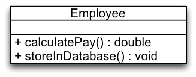

Rectangle provides a method to draw a rectangle shapes on the screen. For that, Rectangle uses GUI to implement draw().
GeometricApplication is a package for geometrical computations, which also uses Rectangle (area()).
GeometricApplication depends on GUI (GUI has to be deployed along with Rectangle) even if it only needs the geometrical functions of rectangles.
Evaluation:
Rectangle has multiple responsibilities!
Geometrics of rectangles: area()
Drawing of rectangles: draw()
Rectangle has low cohesion!
It is not a representation of a coherent concept, but a point to bundle needed functionality without consideration of their cohesion. Geometrics and drawing do not naturally belong together.
Problems:
Rectangle has multiple reasons to change.
If drawing functionality changes in the future, we need to retest and redeploy Rectangle in context of GeometricalApplication!
A Single-Responsibility Compliant Design
Assessment:
Split responsibilities:
Rectangle models geometric properties of rectangles.
DrawableRectangle models visual properties of graphical rectangles.
Computational Geometry Application uses only Rectangle. It only depends on the geometrical aspects.
GUI uses DrawableRectangle and indirectly Rectangle. It needs both aspects and therefore depends on both.
Both classes can be reused easily!
Only changes to the responsibilities we use will affect us.
Both classes are easily understood!
Each implements one concept. Rectangle represents a rectangle shape by its geometric properties. DrawableRectangle represents a rectangle by its visual properties.
Responsibility and Cohesion
Responsibility
In general, a class is assigned the responsibility to know or do something (one thing).
Examples:
Class PersonData is responsible for knowing the data of a person.
Class CarFactory is responsible for creating Car objects.
A responsibility is an axis of change.
A class with only one responsibility has only one reason to change!
In general, if new functionality must be achieved, or existing functionality needs to be changed, the responsibilities of classes must be changed.
Cohesion
Cohesion measures the degree of togetherness among the elements of a class.
In a class with high cohesion every element is part of the implementation of exactly one concept. The elements of the class work together to achieve one common functionality.
A class with high cohesion implements only one responsibility!
Cohesion actually measures the extent to which operations and data within a class belong to the concept this class is representing. Therefore, a class with low cohesion – i.e., a class where the operations and data actually belongs to several concepts – violates the single-responsibility principle.
Common metrics that are defined to measure the cohesion (such as LCOM(*)) are usually not working at the conceptual level and hence, would identify a class such as PersonData that stores information regarding a person and which usually offers a large number of "getter" and "setter" methods as non-cohesive. But, from a conceptual perspective this class is cohesive.
Applying the single-responsibility principle maximizes the cohesion of classes.
Classes with high cohesion ...
can be reused easily,
are easily understood,
protect clients from changes, that should not affect them.
Further Scenarios
Should we split the responsibilities of this class?

The class Employee which has two responsibilities:
Calculating an employee’s payment.
Storing employee data in the database.
Calculating the payment is part of the business rules. It corresponds to a real-world concept the application shall implement. Storing information in the database is a technical aspect. It is a necessity of the IT architecture that we have selected; does not correspond to a real-world concept.
Mixing business rules and technical aspects is calling for trouble! From experience, we know that both aspects are extremely volatile. Hence, most probably we should split the class in this case.
Application
We should split a class that has two responsibilities if:
Both responsibilities will change separately.
The responsibilities are used separately by other classes.
Responsibilities pertain to optional features of the system.
We should not split responsibilities if:
Both responsibilities will only change together, e.g. if they together implement one common protocol.
Both responsibilities are only used together by other classes.
Responsibilities pertain to mandatory features.
Strategic Application of Principles
Strategic Application of Principles
Only apply a principle, if there is a symptom!
Be agile and modify the design when needed.
Choose the kinds of changes to guide your application of the single-responsibility principle. Guess the most likely kinds of changes derived from experience. Experienced designers hope to know the user and an industry well enough to judge the probability of different kinds of changes.
Invoke the single-responsibility principle against the most probable changes.
An axis of change is an axis of change only if the change actually occurs.
The Smart Home Example
In the following we will reason about a typical object-oriented design of a smart home.
The Smart Home Example
A smart home has many features that are controlled automatically:
Heating, Lighting, Shutters, ...
Location is the base class that declares the functionality that some location can offer (optionally!). Hence, it takes multiple responsibilities.
A prototypical object-oriented solution (Part 2):
class Room extends Location {
public Room(List<Shutter> shutters, List<Light> lights) {
super(shutters, lights);
}
}
class Floor extends CompositeLocation<Room> {
public Floor(List<Room> locations) { super(locations); }
}
class House extends CompositeLocation<Floor> {
public House(List<Floor> locations) { super(locations); }
}
class Main {
public static void main(String[] args) {
House house = new House(null);
List<Floor> floors = house.locations();
}
}
The question: Split or Not Split?
In the prototypical solution all (optional) features are declared by the main interface (Location).
We should split the code, if we want to be able to make functional "packages", such as heating control, lighting control, or security, optional. Consider, e.g., the case that the provider may want to sell several configurations of a smart home, each with a specific selection of features.
Sketching a solution if would like to split (Part 1):
public interface Location { }
interface CompositeLocation<L extends Location> extends Location {
abstract List<L> locations();
}
class Room implements Location { }
class Floor implements CompositeLocation<Room> {
private List<Room> rooms;
public List<Room> locations() { return rooms; }
}
class House implements CompositeLocation<Floor> {
private List<Floor> floors;
public List<Floor> locations() { return floors; }
}
So far we are just modeling the basic structure of a building (House).
Sketching a solution if would like to split (Part 2):
interface LocationWithLights extends Location {
List<Light> lights();
}
class RoomWithLights extends Room implements LocationWithLights {
private List<Light> lights;
public List<Light> lights() { return lights; }
}
abstract class CompositeLocationWithLights<LL extends LocationWithLights>
implements CompositeLocation<LL> {
public List<Light> lights() {
List<Light> lights = new ArrayList<Light>();
for (LocationWithLights child : locations()) {
lights.addAll(child.lights());
}
return lights;
}
}
Given the shown code/the proposed solution, we can identify several issues:
class FloorWithLights extends ...
The class should inherit from (CompositeLocationWithLights and Floor) ? (we don't want code duplication!)
class HouseWithLights extends ...
The class should inherit from ? (we don't want code duplication!)
Imagine that we have another additional feature; e.g., shutters and we want to avoid code duplication!
Ideally, we would like to have several versions of class definitions - one per responsibility - which can be “mixed and matched” as needed.
abstract class Table[A, B](defaultValue: B) {
def get(key: A): Option[B]
def set(key: A, value: B)
def apply(key: A) = get(key) match {
case Some(value) ⇒ value
case None ⇒ defaultValue
}
}
class ListTable[A, B](defaultValue: B) extends Table[A, B](defaultValue) {
private var elems: List[(A, B)] = Nil
def get(key: A) = elems.find(_._1.==(key)).map(_._2)
def set(key: A, value: B) = { elems = (key, value) :: elems }
}
object ASynchronizedTable
extends ListTable[String, Int](0) with SynchronizedTable[String, Int]
In Scala, traits are a unit of code reuse that encapsulate abstract and concrete method, field and type definitions. Traits are reused by mixing them into classes. Multiple traits can be mixed into a class (mixin composition).
Unlike classes, traits cannot have constructor parameters. Traits are always initialized after the superclass is initialized.
One major difference when compared to multiple inheritance is that the target method of super calls is not statically bound as in case of (multiple) inheritance. The target is determined anew whenever the trait is mixed in. This (the dynamic nature of super calls) makes it possible to stack multiple modifications on top of each other.
Mixin Composition in Scala
In Scala, if you mixin multiple traits into a class the inheritance relationship on base classes forms a directed acyclic graph.
A linearization of that graph is performed.
The Linearization (Lin) of a class C (class C extends C1 with ... with Cn) is defined as:
Lin(c) = C, Lin(Cn) ⪼ ... ⪼ Lin(C1)
where ⪼ concatenates the elements of the left operand with the right operand, but elements of the right operand replace those of the left operand.
{a,A} ⪼ B = a,(A ⪼ B) if a ∉ B
= (A ⪼ B) if a ∈ B
The result of the linearization in particular determines the target of super calls made in traits.
Mixin Composition in Scala
abstract class AbsIterator extends AnyRef { ... }
trait RichIterator extends AbsIterator { ... }
class StringIterator extends AbsIterator { ... }
class Iter extends StringIterator with RichIterator { ... }
{ Iter, RichIterator, StringIterator, AbsIterator, AnyRef, Any }
Abstract Types in Scala
class Food
abstract class Animal {
type SuitableFood <: Food
def eat(food: SuitableFood)
}
class Grass extends Food
class Cow extends Animal {
type SuitableFood = Grass
override def eat(food: Grass) {}
}
An abstract type declaration is a placeholder for a type that will be defined concretely in a subclass. In the given example, SuitableFood refers to some type of Food (Food is an upper bound) that is still unknown. Different subclasses can provide different realizations of SuitableFood - depending on the needs of the respective animal.
Path-dependent types in Scala
In Scala objects can have types as members.
The meaning of a type depends on the path you use to access it.
The path is determined by the reference to an Object.
Different paths give rise to different types.
In general, a path-dependent type names an outer object
class DogFood extends Food
class Dog extends Animal {
type SuitableFood = DogFood
override def eat(food: DogFood) {}
}
scala> val bessy = new Cow
bessy: Cow = Cow@10cd6d
scala> val lassie = new Dog
lassie: Dog = Dog@d11fa6
scala> lassie eat (new bessy.SuitableFood)
<console>:13: error: type mismatch;
found : Grass
required: DogFood
lassie eat (new bessy.SuitableFood)
Splitting up using Scala (Java Inspired Base):
trait Shutter
trait Light
abstract class Location {
def shutters: List[Shutter]
def lights: List[Light]
}
class Room(
val lights: List[Light],
val shutters: List[Shutter]) extends Location
abstract class CompositeLocation[L <: Location] extends Location {
def lights: List[Light] = locations.flatMap(_.lights)
def shutters: List[Shutter] = locations.flatMap(_.shutters)
def locations: List[L]
}
class Floor(val locations: List[Room]) extends CompositeLocation[Room]
class House(val locations: List[Floor]) extends CompositeLocation[Floor]
object Main extends App {
val house = new House(new Floor(new Room(Nil, Nil) :: Nil) :: Nil)
val floors: List[Floor] = new House(Nil).locations
}
Splitting up using Scala (Base):
trait Building {
trait TLocation {}
type Location <: TLocation
trait TRoom extends TLocation
type Room <: TRoom with Location
def createRoom(): Room
trait CompositeLocation[L <: Location] extends TLocation {
def locations: List[L]
}
trait TFloor extends CompositeLocation[Room]
type Floor <: TFloor with Location
def createFloor(locations: List[Room]): Floor
trait THouse extends CompositeLocation[Floor]
type House <: THouse with Location
def createHouse(locations: List[Floor]): House
def buildHouse(specification: String): House = {
// imagine to parse the specification...
createHouse(List(createFloor(List(createRoom()))))
}
}
Note, that the buildHouse method constructs a House object though the concrete type is not yet known.
What we want to achieve is that:
Features that are developed independently (such as heating, cooling or lighting) can be (freely) combined
The solution is type safe even in the presence of new optional features (which requires appropriate support by the available programming language)
We do not duplicate code (Copy & Paste programming).
Additionally, the underlying programming language should also support separate compilation to enable us to deploy our solution independently.
Splitting up using Scala (adding Lights):
trait Lights extends Building {
trait TLocation extends super.TLocation {
def lights(): List[Light]
def turnLightsOn = lights.foreach(_.turnOn())
def turnLightsOff = lights.foreach(_.turnOff())
}
type Location <: TLocation
trait TRoom extends super.TRoom with TLocation
type Room <: TRoom with Location
trait CompositeLocation[L <: Location]
extends super.CompositeLocation[L] with TLocation {
def lights: List[Light] = locations.flatMap(_.lights())
}
trait TFloor extends super.TFloor with CompositeLocation[Room]
type Floor <: TFloor with Location
trait THouse extends super.THouse with CompositeLocation[Floor]
type House <: THouse with Location
}
Splitting up using Scala (Combining Lights and Shutters):
trait LightsAndShutters extends Lights with Shutters {
trait TLocation
extends super[Lights].TLocation
with super[Shutters].TLocation
type Location <: TLocation
trait TRoom extends super[Lights].TRoom with super[Shutters].TRoom
with TLocation
type Room <: TRoom with Location
trait CompositeLocation[L <: Location]
extends super[Lights].CompositeLocation[L]
with super[Shutters].CompositeLocation[L]
with TLocation
trait TFloor extends super[Lights].TFloor with super[Shutters].TFloor
with CompositeLocation[Room]
type Floor <: TFloor with Location
trait THouse extends super[Lights].THouse with super[Shutters].THouse
with CompositeLocation[Floor]
type House <: THouse with Location
}
Splitting up using Scala (Using Our Combined):
object BuildingsWithLightsAndShutters extends LightsAndShutters with App {
type Location = TLocation
type Room = TRoom
type Floor = TFloor
type House = THouse
def createRoom(): Room =
new Room {
var lights = List.empty[Light];
var shutters = List.empty[Shutter]
}
def createFloor(rooms: List[Room]): Floor =
new Floor { val locations = rooms }
def createHouse(floors: List[Floor]): House =
new House { val locations = floors }
val h = buildHouse("three floors with 6 rooms each")
h.lights
h.shutters
h.locations
h.turnLightsOn
}
Basically, in the first 4 lines we create type aliases for location, room, floor and house which "fixes" our abstract type definitions. After that we implement the factory methods as required. For the method parameter types and return types, we still use the names of the type definitions.
Summary
A class should have only one reason to change.
Applying the single-responsibility principle maximizes the cohesion of classes.
Classes with high cohesion
can be reused easily,
are easily understood,
protect clients from changes, that should not affect them.
But, be strategic in applying the single-responsibility principle.
Carefully study the context and make informed trade-offs. Guess most likely axes of change and separate along them. Be agile: Only apply the single-responsibility principle when needed.
As we have seen in the previous example, achieving the desired separation may not be straightforward with typical object-oriented mechanisms.